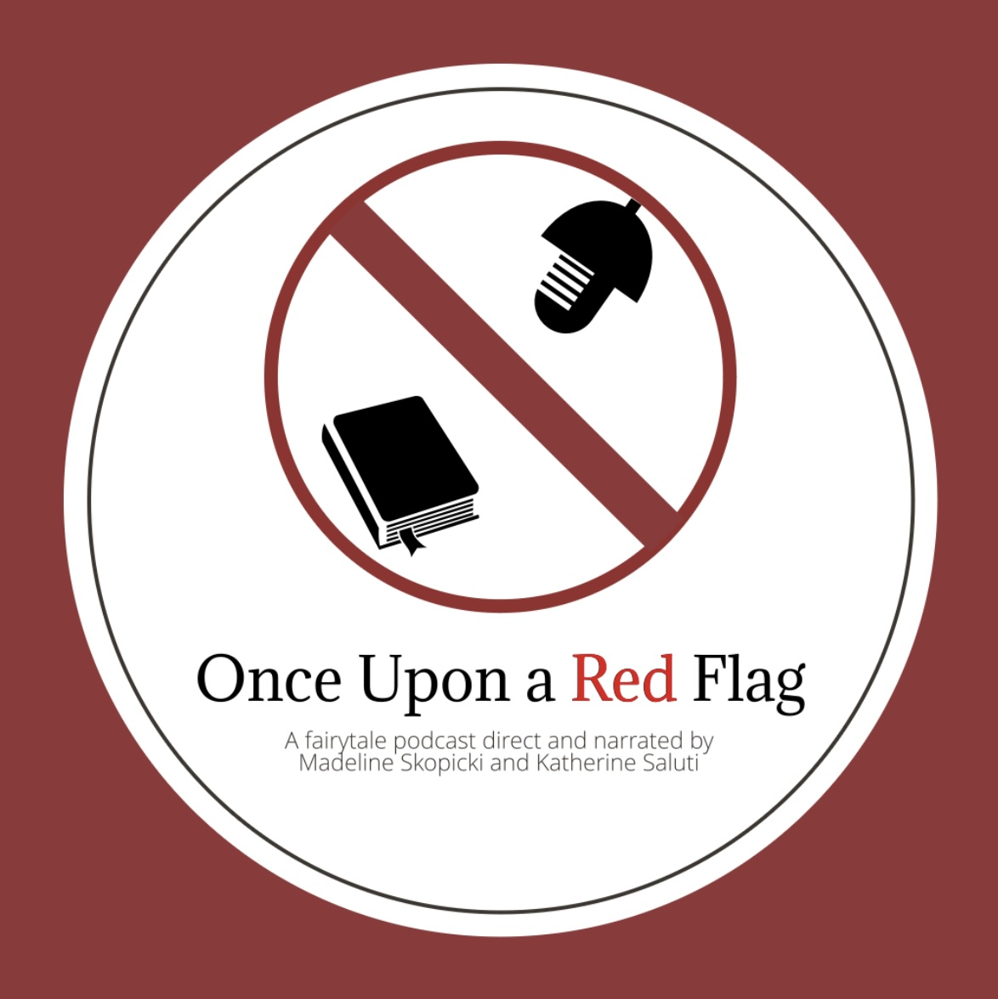

Welcome to our webpage Scholars! This cite is for you to explore our podcast page! Make sure you're never out of the loop, and happy scrolling!
Are you caught up on our LATEST EPISODES?
Here's your chance! Check out some of our episode titles and see what interests you most! Please note that the episodes you will see listed are our most recent episodes.
Ep. 11:
Joseph Jacobs is a JOKE
Ep. 12:
Getting Down with Grimm
Ep. 13:
Airing it out with Andersen
Like what you see? Check out more of us!
Click the link below to listen to our latest podcast!

Ep. 13: Airing it out with Andersen. View the transcript here.